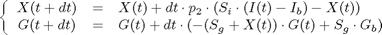

Solving an IVGTT problem using SIVIA
Minimal models of plasma glucose and insulin kinetics have been developed and used by Bergman and co-workers since the 1970's to investigate glucose metabolism in vivo in physiological, pathological and epidemiological studies from a frequently-sampled intravenous glucose tolerance (FSIGT) test, i.e. standard intravenous glucose tolerance test (IVGTT). Amongst others indices, the glucose and insulin minimal models allow us to characterize the FSIGT test data in terms of four metabolic indices:
- Si : insulin sensitivity, the dependence of fractional glucose disappearance on plasma insulin
- Sg : glucose effectiveness, the ability of glucose per se to suppress endogenous glucose production and stimulate glucose uptake
- p1 : first phase pancreatic responsivity, a measurement of the size of the first peak in plasma insulin due to the glucose injection
- p2 : second phase pancreatic responsivity, a measurement of the size of the second peak of plasma insulin that follows the first peak and the refractory period
In a typical FSIGT test, blood samples are taken from a fasting subject at regular intervals of time, following a single intravenous injection of glucose (t = 0). The blood samples are then analysed for glucose and insulin contents. The table below gives a typical response from a healthy subject to a single intravenous injection of glucose:


Denoting Gb and Ib respectively the glucose and insulin steady-state concentrations (also referred to as basal concentrations, usually determined by averaging the last IVGTT measurements), Bergman minimal model describes the evolution of the blood glucose concentration by the differential system hereafter:
Hence, the purpose of this application is to find the possible values of the parameters introduced in Bergman minimal model (Si, Sg, p2 and G0), in order to make the model fit the measurements above.
The approach is quite similar to that followed in drugs_parameters : the model is computed for each t of the measurement table, and its results compared to the corresponding measurements. A quadruplet (Si, Sg, p2, G0) is considered as a solution of the problem if and only if it makes the model fit every measurement.
Using interval arithmetics, for this application, makes it possible to find every quadruplet (Si, Sg, p2, G0), such as Bergman minimal model fits a set of data subject to measurements errors. Here, a 2 % relative error on G, as well as a relative 3 % error on I, are considered. As done in drugs_parameters, determining the possible values of (Si, Sg, p2, G0) can be seen as a set inversion problem, and may be performed using vsivia.
However, in comparison with drugs_parameters, the considered function is not trivial to compute, since no explicit expression of it is known. It has thus to be integrated. Here, we will use a simple explicit Euler method to achieve this. For a given time interval dt :

Computing X and G with this method requires to have measurements of I at any time (at least every dt), which is unlikely to occur. Even though it introduces an estimation error, interpolation is thus used to solve this issue.
An other source of estimation error is caused by overbounding phenomena, that may happen in interval computations when a same interval occurs several times in a same expression. Here, this problem is raised for both X and G.
Let us change the basis of the problem by introducing p3, such as :
The system may be rewritten as follows:
The only remaining issue concerns the bi-occurence of Sg in the expression of G. It can be solved using the *-partially optimal coercion theorem, according to which the modality of Sg can be switched in the following way:
To conclude, the IVGTT problem can be solved as an inversion problem. In order to reduce overbounding phenomena in the computations, modal interval arithmetics is used, and an intermediate variable, p3, has been introduced to replace Si in the computations. Once a solution of the problem has been found, Si can be simply determined from p2 and p3.
In comparison with doughnut_parameters, torus_parameters, and drugs_parameters, the class used to define the parameters of this IVGTT application for vsivia involves additionnal processing, in particular importing measurements from a file, interpolating the measurements of I, and performing the integration of X and G. However, the way to write the class remains the same, since the class shall still derivate from vsivia_parameters.
classdef IVGTT_parameters < vsivia_parameters properties
The problem is an inversion problem.
algorithm = 'inversion' ;
The following box is taken as an initial guess of an enclosure of the solutions (p1, p2, p3, G0).
U0 = [.01 .04 ; .01 .04 ; .5e-5 5e-5 ; 200 350] ;
Declaration of the measurement vector, Y0, that is initialized in the constructor.
Y0 ;
The accuracy parameter, upon which the length of the computation depends.
epsilon = '2^-4 rel';
A tolerance parameter telling vsivia that up to 6 mismatched measurements are acceptable for a solution of the problem. This tolerance is considered because the model cannot keep up with the significant variations of the earliest measurements.
tol_out = 6 ;
The time vector for the measurements of G (loaded later).
tG ;
The time vector for the measurements of I (loaded later).
tI ;
The measurements of G, taking the measurement uncertainties into account (computed later).
Gerr ;
The measurements of I, taking the measurement uncertainties into account (computed later).
Ierr ;
end % properties methods
The measurements of G and I are loaded when instantiating the class, i.e. in the constructor hereafter. The measurement errors are also computed in this method. The measurement vector for vsivia corresponds to the measurements of G, taking the measurement errors into account.
function obj = IVGTT_parameters load IVGTT_data ; obj.tG = t' ; obj.tI = t' ; G0 = interval(G, [], 0)' ; I0 = interval(I, [], 0)' ; err = max(2.5, .02 * G') ; obj.Gerr = G0 + interval(-err, err) ; obj.Ierr = [ .97 1.03] * I0 ; obj.Y0 = obj.Gerr ; end % IVGTT_parameters
Lastly, the inversion function is defined. Note here that it is declared as an instance method and not as a static method, in order to use the values loaded and computed in the class constructor, that are stored within instance properties.
function y = compute(this, p1, p2, p3, g0) % Loading of the time and measurement vectors... tG_ = this.tG ; tI_ = this.tI ; G = this.Gerr ; I = this.Ierr ; % Basal glucose and insulin are taken as the final measurements % of G and I (when they become almost constant). Gb = G(end) ; Ib = I(end) ; % Time step and time vector for the numerical integration. dt = 1 ; it = 0:dt:tI_(end) ; % Interpolation of the measurements of I... Ii = interval(interp1(tI_,I.lower,it,'cubic'), interp1(tI_,I.upper,it,'cubic')) ; % Numerical integration to compute X and G... n = size(p1,1) ; nit = numel(it) ; Xe = interval(zeros(n,nit), [], 0) ; Ge = interval(zeros(n,nit), [], 0) ; Ge(:,1) = g0 ; for k=1:nit-1 Xe(:,k+1) = Xe(:,k) * (1 - dt*p2) + dt*p3*(Ii(k)-Ib) ; geGgb = Ge(:,k) >= Gb ; geLgb = Ge(:,k) <= Gb ; geIgb = ~(geGgb|geLgb) ; Ge(geGgb,k+1) = Ge(geGgb,k) * (1 - dt*(Xe(geGgb,k) + p1(geGgb))) + dt * p1(geGgb).' * Gb ; Ge(geLgb,k+1) = Ge(geLgb,k) * (1 - dt*(Xe(geLgb,k) + p1(geLgb).')) + dt * p1(geLgb) * Gb ; Ge(geIgb,k+1) = Ge(geIgb,k) * (1 - dt*(Xe(geIgb,k) + p1(geIgb))) + dt * p1(geIgb) * Gb ; end % Interpolation to obtain the results of the model when the % measurements of G have been performed. y = interval(interp1(it,Ge.lower',tG_,'cubic'), interp1(it,Ge.upper',tG_,'cubic')) ; if n > 1 y = y' ; % Dimension 1: boxes ; dimension 2: interpolated data end end % compute
end % methods end